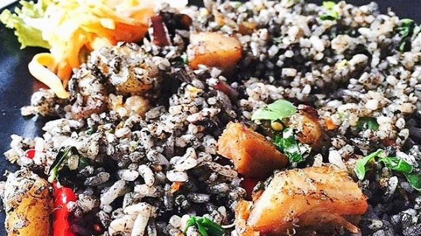
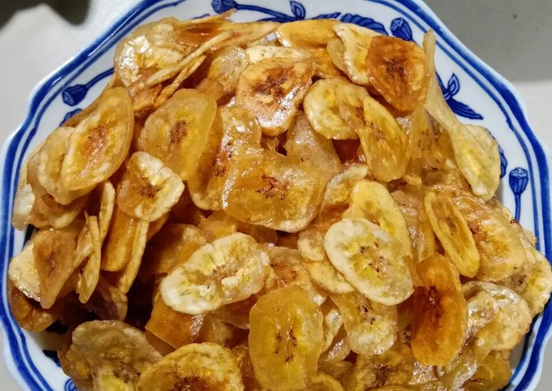

6 Menu Makanan Khas Lampung 🌿

Seruit
Lalapan ikan bakar yang disajikan dengan sambal khas Lampung yang pedas dan segar.
Bahan-bahan:
- 1 ekor ikan nila atau ikan mas segar
- Garam dan jeruk nipis secukupnya
- Daun kemangi untuk lalapan
Bahan sambal:
- 10 cabai rawit merah
- 5 cabai merah keriting
- 5 siung bawang merah
- 2 buah tomat merah
- Garam dan gula secukupnya
- Air jeruk nipis secukupnya
Cara membuat:
- Bersihkan ikan, lumuri dengan garam dan perasan jeruk nipis, diamkan 15 menit.
- Bakar ikan hingga matang dan beraroma harum.
- Haluskan semua bahan sambal dengan ulekan, koreksi rasa.
- Sajikan ikan bakar dengan sambal dan lalapan daun kemangi segar.

Gonggong
Makanan laut khas Lampung berupa kerang laut yang dimasak dengan bumbu pedas.
Bahan-bahan:
- 500 gr gonggong (kerang laut)
- 5 siung bawang merah
- 3 siung bawang putih
- 10 cabai rawit merah
- 2 cm lengkuas
- 2 batang serai, memarkan
- Garam dan gula secukupnya
- Minyak untuk menumis
Cara membuat:
- Bersihkan gonggong, rebus hingga matang dan tiriskan.
- Haluskan bawang merah, bawang putih, cabai, dan lengkuas.
- Tumis bumbu halus bersama serai hingga harum.
- Masukkan gonggong, tambahkan garam dan gula, aduk rata.
- Masak sebentar hingga bumbu meresap, angkat dan sajikan.

Tanjung Api
Sayur asam khas Lampung dengan rasa segar dan pedas, berisi berbagai sayuran segar.
Bahan-bahan:
- 100 gr labu siam, potong dadu
- 100 gr melinjo muda
- 50 gr daun melinjo
- 50 gr daun singkong, potong-potong
- 5 cabai rawit merah
- 3 siung bawang merah
- 2 buah asam kandis atau 2 sdm air asam jawa
- Gula, garam, dan kaldu bubuk secukupnya
Cara membuat:
- Rebus air hingga mendidih, masukkan labu siam, melinjo muda, dan daun melinjo.
- Tambahkan bawang merah, cabai rawit, asam kandis, garam, gula, dan kaldu bubuk.
- Masukkan daun singkong, masak hingga sayuran matang dan rasa asam segar tercapai.
- Sajikan hangat sebagai pelengkap nasi.

Nasi Tiwul Lampung
Alternatif nasi dari singkong yang dikeringkan dan diolah menjadi nasi khas Lampung.
Bahan-bahan:
- 200 gr tiwul (singkong kering)
- 400 ml air panas
- Garam secukupnya
Cara membuat:
- Cuci tiwul hingga bersih.
- Sirami tiwul dengan air panas, aduk rata dan diamkan 10 menit.
- Masak tiwul dengan kukusan selama 30 menit hingga matang dan pulen.
- Sajikan sebagai pengganti nasi dengan lauk favorit.

Keripik Pisang Lampung
Camilan renyah khas Lampung dari irisan pisang yang digoreng dan diberi rasa manis.
Bahan-bahan:
- 500 gr pisang kepok yang belum terlalu matang
- Minyak goreng secukupnya
- Gula pasir secukupnya (opsional)
Cara membuat:
- Kupas pisang dan iris tipis-tipis menggunakan alat pengiris.
- Rendam irisan pisang dalam air garam selama 10 menit, tiriskan.
- Goreng irisan pisang dalam minyak panas hingga kuning kecoklatan dan renyah.
- Tiriskan dan taburi gula pasir jika suka rasa manis.
- Sajikan sebagai camilan renyah dan lezat.

Kepiting Soka Kaltim
Kepiting muda (soka) dimasak dengan bumbu pedas manis khas Kalimantan Timur yang menggoda selera.
Bahan-bahan:
- 500 gr kepiting soka (kepiting muda), bersihkan
- 5 siung bawang merah
- 3 siung bawang putih
- 5 cabai merah keriting
- 3 cabai rawit (opsional untuk pedas ekstra)
- 2 sdm saus tiram
- 2 sdm kecap manis
- 1 sdt gula merah, sisir halus
- Garam dan merica secukupnya
- Minyak untuk menumis
Cara membuat:
- Haluskan bawang merah, bawang putih, dan cabai.
- Tumis bumbu halus hingga harum dan matang.
- Masukkan kepiting soka, aduk rata dengan bumbu.
- Tambahkan saus tiram, kecap manis, gula merah, garam, dan merica.
- Masak dengan api sedang hingga kepiting matang dan bumbu meresap.
- Sajikan hangat dengan nasi putih.